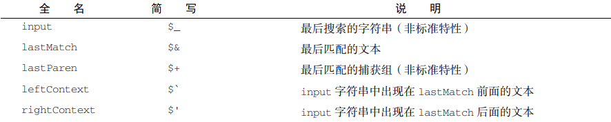
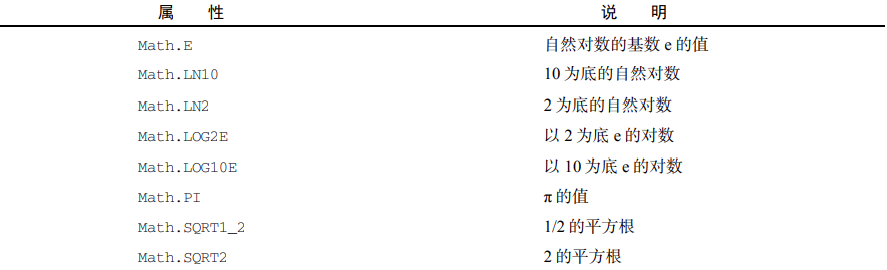
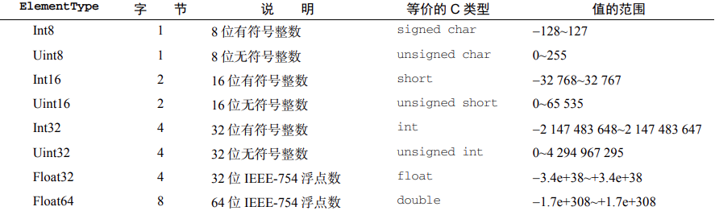

JavaScript
JavaScript
基础知识
script 标签
- type：可看做是 language 的替代属性，表示编写代码使用的脚本语言的内容类型，MIME 这个属性非必须，默认是 text/javascript
- src：引入外部文件（引入外部文件将不会执行 script 标签中的代码）
- charset：指定 src 属性指定的代码的字符集
- async：异步执行，当页面被解析时同时被执行，多个文件解析顺序不定（只针对外部脚本文件）
- defer：在页面完成解析时执行，多个文件按顺序返回（只针对外部脚本文件）
script、link和image
<script>标签和<link>标签在设置src/href同时添加到文档后才会下载文件；<img>标签在设置src属性后就下载文件，即使没有添加到文档中。
关键字
- 区分大小写
- 标识符
- 字母，数字，下划线，$ 组成
- 只能以字母，下划线，$ 开头
- 不能将关键字作为标识符。命名采用驼峰式命名
大驼峰（类名）：每个单词首字母大写 UserName
小驼峰（变量名、函数）：首单词首字母不大写，其余单词大写 username - 名称要有意义，但不能为中文
- 语句
每个语句以分号结尾，可省略，但最好不要省略
变量
- 变量名由字母，数字，下划线以及 $ 组成
不要使用下划线或者数字作为变量名的开头
- 变量提升（Hoisting）：
变量提升提到函数（本作用域）的 top 的地方。只是提升变量的声明，并不会把赋值也提升上来。
函数会产生临时作用域，而 if 等块语句不会产生新作用域。 - 函数提升：
函数提升是把整个函数都提到前面去，只有函数声明形式才能被提升，而函数表达式不会
- 定义时没有 var 为全局变量
方法中的 this- 在对象中，该方法的 this 指向对象
- 在全局变量中，环境为浏览器时 this 为 window，环境为 node 时 this 为全局变量 global
原始类型初始化
原始类型初始化可以使用原始字面量形式，也可以使用 new 关键字。
使用 new 关键字会创建一个 Object 类型的实例，行为类似原始类型；但是可以动态添加属性，原始字面量形式创建的原始类型不能动态添加属性。
参数传递
参数传递是 按值传递 的。
在传递对象时，传递的是对象引用的副本（按共享引用）。
上下文
执行上下文主要分为函数上下文和全局上下文两种（eval() 调用内部存在第三种上下文）。
info
执行上下文：全局上下文、函数上下文、块级上下文。
以下情况会在作用域链前端临时添加一个上下文：
- try/catch 语句的 catch 块
添加一个新的变量对象：要抛出的错误对象的声明 - with 语句
添加指定对象
try…catch 只能捕获同步异常，无法捕获异步异常。
数据类型
基础数据类型
- boolean
true/false - number
数字类型。按精度（整数、单精度、双精度）/按进制（二进制、八进制 070、十进制、十六进制 0x11）/非数值（NaN）/科学计数法
任何涉及到 NaN 的操作都会返回 NaN; NaN 与任何值都不相等，包括 NaN 本身 - symbol
\n 换行、 \t 制表、 \b 退格、 \r 回车、 \\ 斜杠、 \‘ 单引号、 \“ 双引号 - bigint
- string
- underfined
变量声明没有赋值，一般不会显式的声明 - null
null vs underfined
值相等、类型不相等
undefined 派生自 null 值。undefined == null 结果为 true，null 与 undefined 用途不同，null 可以用来表示一个空对象，但是没有必要把一个变量的值显式设置为 undefined
字符串迭代和解构
字符串原型暴露了 @@iterator。
1 | |
引用数据类型
- Object
- object
由大括号括起来的键值对，逗号分割 - function
- array
由中括号括起来，逗号分割
- object
深拷贝和浅拷贝
深拷贝（克隆）：表示对于对象的克隆
- 利用 Object.assign
var stu = Objection.assign({}, obj) //对象的合并（没有对象嵌套） - 利用 json
var obj2 = JSON.parse(JSON.stringify(obj))//对象-->字符串-->对象 - 利用递归函数
浅拷贝（地址拷贝）：表示仅拷贝引用地址
null 和 undefined 的区别
- 数据类型不同；
- 意义不同：
- undefined：
- 声明变量未赋值；
- null：
- 声明了一个变量，并且赋值了，但赋的值是一个 null；
- 表示准备用来保存对象，还没有真正保存对象的值，从逻辑角度看，null 值表示一个空对象指针；
- undefined：
- 转数字结果不同（Number()）：
- undefined：NaN；
- null：0；
- 产生场景不同：
- undefined：
- 声明变量未赋值；
- 数组没有某个元素；
- 对象没有某个属性；
- 函数没有返回值；
- 函数调用的时候没有传递参数并且声明函数的时候没有设置默认值；
- null：
- 作为原型链的终点；
- undefined：
1 | |
引用类型
基本引用类型
warning
引用类型不是类。
函数也是引用类型。
Date
new Date()
- 传入日期字符串会后台调用
Date.parse()，返回 GMT 日期 - 传入参数，后台调用
Date.UTC()，返回本地时区日期（仅后台调用）
常用方法
Date.parse()—— 日期字符串转毫秒数
1.“月/日/年”，如 “5/23/2019“；
2.“月名 日, 年”，如 “May 23, 2019“；
3.“周几 月名 日 年 时: 分: 秒 时区”，如 “Tue May 23 2019 00:00:00 GMT-0700“；
4.ISO 8601 扩展格式“YYYY-MM-DDTHH:mm:ss.sssZ”，如2019-05-23T00:00:00（只适用于 兼容 ES5 的实现）。Date.UTC()—— 参数转毫秒数
年、月（从 0 开始）、日（131）、时（023）、分、秒、毫秒，年、月必输，日默认 1，其他默认 0。Date.now()—— 获取现在日期
继承方法
toLocalString()—— 返回与浏览器运行本地环境一致的日期时间toLocaleString() - 2/1/2019 12:00:00 AMtoString()—— 返回 24 小时制的带有时区信息的日期时间toString() - Thu Feb 1 2019 00:00:00 GMT-0800 (Pacific Standard Time)valueOf()—— 返回毫秒表示（非字符串）
操作符可以直接使用返回的值
tip
toLocalString()和toString()在不同浏览器上效果不同，不适合用于展示数据。
格式化方法也不适合用于用户界面展示。
格式化方法
toDateString()显示日期中的周几、月、日、年（格式特定于实现）；toTimeString()显示日期中的时、分、秒和时区（格式特定于实现）；toLocaleDateString()显示日期中的周几、月、日、年（格式特定于实现和地区）；toLocaleTimeString()显示日期中的时、分、秒（格式特定于实现和地区）；toUTCString()显示完整的 UTC 日期（格式特定于实现）。
RegExp
实例属性
global：布尔值，表示是否设置了 g 标记。ignoreCase：布尔值，表示是否设置了 i 标记。unicode：布尔值，表示是否设置了 u 标记。sticky：布尔值，表示是否设置了 y 标记。lastIndex：整数，表示在源字符串中下一次搜索的开始位置，始终从 0 开始。multiline：布尔值，表示是否设置了 m 标记。dotAll：布尔值，表示是否设置了 s 标记。source：正则表达式的字面量字符串（不是传给构造函数的模式字符串），没有开头和结尾的 斜杠。flags：正则表达式的标记字符串。始终以字面量而非传入构造函数的字符串模式形式返回（没 有前后斜杠）。
实例方法
exec()test()
构造函数属性（静态属性）

扩展：通过
$1~$9 访问捕获组。简写需要通过 中括号 方式访问。
tip
正则表达式的valueOf返回正则表达式本身。
构造函数属性非标准，生产环境勿用。
原始值包装类型
Number、String、Boolean。
以读模式访问字符串时执行：①创建 String，②调用实例上的特定方法，③销毁实例。
- 使用 new 调用原始值包装类型的构造函数，与调用同名的转型函数并不一样。
1 | |
String 包装类型
length、charAt()、charCodeAt()和fromCharCode()只针对 16 位码元的字符串。
对于使用了额外 16 位表示增补平面的字符串 (代理对)，不能正确识别，可以使用codePointAt()代替charCodeAt()，其可以识别完整码点。Unicode 的 4 中规范化形式，通过
normalize("NFD")规范。
同一个字符串规范化形式不同，比较符认为不相等，需要规范。
- NFD（Normalization Form D）、
- NFC（Normalization Form C）、
- NFKD（Normalization Form KD）、
- NFKC（Normalization Form KC）。
单例内置对象
1.Global
encodeURI()—— 用于对整个 URI 进行编码
不会编码属于 URL 组件的特殊字符，比如冒号、斜杠、问号、 井号encodeURIComponent()—— 多用于编码 URI 中单独的组件，如查询字符串
编码所有非标准字符decodeURI()—— 解码 encodeURIdecodeURIComponent()—— 解码 encodeURIComponent
1 | |
2.Math

Math.ceil()方法始终向上舍入为最接近的整数。Math.floor()方法始终向下舍入为最接近的整数。Math.round()方法执行四舍五入。Math.fround()方法返回数值最接近的单精度（32 位）浮点值表示。Math.random()方法返回一个 0~1 范围内的随机数，其中包含 0 但不包含 1。
集合引用类型
- 对象
- 数组和定型数组
- Map、WeakMap
- Set、WeakSet
tip
- 对象和数组通过字面量形式创建时，不会调用对应的构造函数。
- 数组空位在ES6之前会被忽略，因方法处理不同；在ES6之后，视为存在且为undefined。如果需要数组空位，建议显示声明为undefined。
定型数组
提升原生库传输数据的效率，特殊的包含数据类型的数组。另一种形式的 ArrayBuffer 视图。与 DataView 的区别是：特定于一种 ElementType 且遵循系统原生的字节序。
创建定型数组：
- 读取已有的缓冲
- 使用自有缓冲
- 填充可迭代结构
- 填充基于任意类型的定型数组
<ElementType>.from()和<ElementType>.of()
1 | |
构造函数和实例上的 BYTES_PER_ELEMENT 属性可以获取该类型数组中每个元素的大小。
定型数组不支持的数组方法：
concat()pop()push()shift()splice()unshift()
新添加的方法：
set()subarray()
定型数组拼接：
1 | |
定型数组的上溢和下溢：
1 | |
tip
除了 8 种元素类型，还有一种“夹板”数组类型：Uint8ClampedArray，不允许任何方向溢出。超出最大值 255 的值会被向下舍入为 255，而小于最小值 0 的值会被向上舍入为 0。
Uint8ClampedArray是HTML5 canvas元素的历史遗留，不进行canvas开发不要使用。
ArrayBuffer() vs malloc()
ArrayBuffer() 用于分配特定数量字节空间。
| ArrayBuffer | malloc | |
|---|---|---|
| 分配失败 | 抛出错误 | 返回 null 指针 |
| 分配大小限制 | Number.MAX_SAFE_INTEGER（253 - 1）字节 | 只受可寻址系统内存限制（可使用虚拟内存） |
| 分配成功 | 将所有二进制初始化为 0 | 不会初始化地址 |
| 内存释放 | 可被垃圾回收，不用手动释放 | free() 或程序退出 |
DataVIew： 读取 ArrayBuffer 的视图。
- 读或写的字节偏移量。
- 使用 ElementType 实现 JS 中 Number 类型到二进制格式的转换。
- 内存中值的字节序（默认大端字节序）。
1 | |
ElementType：（ES6 支持的 8 种）

类型可以互换使用。
1 | |
字节序：存储顺序。
- 大端字节序 —— 最高有效位保存在第一个字节，最低有效位保存在最后一个字节。
- 小端字节序 —— 与大端字节序相反。
Map
可使用任何类型作为键/值。
会维护键/值对插入顺序，可顺序迭代，可扩展操作。
属性和方法：
set()：设置键/值对
返回 Map 实例，可链式操作get()：查询has()：查询clear()：清空delete()：删除指定键/值对size：获取键/值对数量
Object vs Map：
- 内存占用：给定固定内存大小，Map 比 Object 多存储 50% 的键/值对
- 插入性能：Map 插入会快一点，插入操作频繁，Map 性能更好
- 查找速度：少量键/值对时，Object 有时候更快（键为数字，浏览器引擎会进行特殊处理）
- 删除性能：Map 删除比查询和插入更快，适合大量删除操作
WeakMap
Map 的子集，多数操作同 Map。
“weak”指 JavaScript 中垃圾回收机制对待“弱映射”中键的方式。
弱映射中的键只能是 Object 或者继承自 Object 的类型。
不可迭代，没有 clear()。
用途：
1.私有变量
1 | |
2.DOM 节点元数据
1 | |
Set
与 Map 类似，但添加方法为 add()，也可以链式操作。可以包含任何类型。
定义正式集合操作：
- 有的 Set 操作具有关联性，要考虑处理多个 Set 实例
- 所有方法返回的集合要保证插入顺序
- 扩展操作符尽量避免集合与数组间转化，可以节省对象初始化成本
- 不要修改已有集合实例，返回新的集合实例
1 | |
WeakSet
类似 WeakMap。
类型扩展
函数
对象
字符串
数组
类型判断
typeof x: 返回变量 x 的类型isNaN()：判断是否是 NaNisFinite()：判断是否在最大值和最小值之间
tip
typeof
用于检测字符串、数值、布尔值和undefined。
在检测函数时会返回Function，实际上内部实现了[[call]]的对象都会返回Function；
在Safari5以前和Chrome7以前，检测正则表达式时也会返回Function。
在IE和FIrefox浏览器中会返回Object。
instanceof
用于检测引用类型。
内存
变量都维护在栈区，基本数据类型的值保存在栈区，而引用数据类型的引用地址保存在栈区，值保存在堆区。
变量的引用地址保存在栈区，真正的值保存在堆区，除了基本数据类型之外的所有其他数据类型被称为引用数据类型。
内存泄漏：
1 | |
优化写法：
1 | |
操作符
算术运算符
（+）
单独变量前：
单独放在一个变量前，相当于调用 Number()，将其他数据类型转换成 number 类型1
2
3
4
5
6
7
8
9console.log(+'123')//123 number类型
console.log(+''); //0
console.log(+' '); //0
console.log(+'016'); //16 不识别8进制，识别成10进制
console.log(+'0xaa'); //170 //识别16进制
console.log(+true); //1
console.log(+false); //0
console.log(+undefined); //NaN
console.log(+null); //0两个变量之间：
如果两边不为 string 和 object 时，转换成 number 类型做运算
如果两边有一边为 string 类型时，会将另外一个变量（除 object）转为 string，作拼接
如果两边有一边为对象，如果该对象既重写 toString,又重写了 valueOf 方法，先调用 valueOf 方法获取返回值，将该返回值和另外一个操作数进行运算。如果该对象没有重写 valueOf 方法，将调用 toString 方法获取返回值，将该返回值和另外一个操作数进行运算。1
2
3
4
5
6
7
8
9
10var obj = {
name:"briup",
valueOf:function(){
return "1";
},
toString(){
return "2";
}
}
console.log(obj+1);//"11"
（-）
将一元减应用于数值时，数值会变成负数。
将一元减应用于非数值时，遵循与一元加操作符相同的规则，最后将得到的数值转化为负数
比较运算符
- 优先级：算术>比较>赋值
- 当比较基本数据类型的时候比较值，当值的类型不一致时候，先将其转换为一致再进行比较
- 当比较引用数据类型的时候比较引用地址
- ==(!=) 只比较值，===(!==) 先看类型，相同再看值
比较两个相容内容的对象：
将对象转换成 json 字符串，在进行比较
1 | |
逻辑运算符（短路运算符）
与（&&）
或（||）
非（!）
三目运算符
条件?执行 1: 执行 2;
变量视为 false 的情况：’ ‘、0、null、underfined、false
位操作符
针对于数字类型的值进行运算，在运算之前先转换为二进制
按位与（&）
按位或（|）
按位亦或（^）
指数运算符（ES7）
** 运算符，作用同 Math.pow()。
类型转换
转换字符串的三种方式
1 | |
null 和 underfined 比较特殊，不能调用 toString，对象原有的方法他们都不可以调用。如果要转换，可以选用包装器函数（String、Number 等）进行转换
转换成布尔类型的情况
‘ ‘、0、null、underfined、false 视为假
转换成数值类型的情况
1 | |
经常需要将其他将一个字符串类型的数字转换为 number 类型的数字
- Number(a) 转换函数
- +a
- -(-a)
- parseInt(a) 将 a 转换为字符串后解析出整数
- parseFloat(a) 将 a 转换为字符串后解析为小数
流程控制语句
注意事项
- 三要素：计数器、循环条件、迭代
- break 在循环条件之前结束循环
- continue 不会结束循环，只跳出当前的那一次循环
- label 标记 可以给循环体加上一个标签，未来可以使用，结束指定标签的循环体
- case 代码块中 break 不能省略
- default 可以放到代码任意位置，break 不能省略，最后位置可以省略
break; - 变量与常量对比使用“===”
增强版 for 循环：for..in 用于遍历数组或者对象的属性
1 | |
tip
要迭代的变量是 null 或 undefined，则不执行循环体。
遍历所有可枚举的属性，包括原型上的属性。
for…of 循环可迭代对象
for…of 根据可迭代对象的 next() 方法产生的顺序进行迭代。
tip
ES2018: 实现for…await…of，支持生成promise的异步可迭代对象。
标签语句
标签 outermost 配合 break 或 continue 语句使用。
1 | |
with 语句（不建议）
with 语句：将代码作用域设置为特定对象，适用于一个对象被反复使用时。
1 | |
switch 语句
- 条件值可以是任何类型
- 比较时使用全等操作符，不会强制转换数据类型
访问属性的方式
objectName.propertyNameobjectName["propertyName"]
表单
- acceptCharset：服务器可以接收的字符集，等价于 HTML 的 accept-charset 属性。
- action：请求的 URL，等价于 HTML 的 action 属性。
- elements：表单中所有控件的 HTMLCollection（所有
<input>、<textarea>、<button>、<select>和<fieldset>元素）。 - enctype：请求的编码类型，等价于 HTML 的 enctype 属性。
- length：表单中控件的数量。
- method：HTTP 请求的方法类型，通常是 “get” 或 “post”，等价于 HTML 的 method 属性。
- name：表单的名字，等价于 HTML 的 name 属性。
- **reset()**：把表单字段重置为各自的默认值。
- **submit()**：提交表单。
- target：用于发送请求和接收响应的窗口的名字，等价于 HTML 的 target 属性。
取得对 form 的引用：
- document.getElementById()…
- doucment.forms
DOM：Document Object Model文档对象模型
DOM 是网页的编程接口。
JS 操作 html 的 api。
是针对 XML 但经过扩展用于 HTML 的应用程序编程接口。DOM 将整个页面映射成一个多节点结构。
BOM：Browser Object Model 浏览器对象模型
JS 操作浏览器的 api 。
开发人员可以使用 BOM 控制浏览器显示的页面以外的部分。弹出新浏览器窗口；移动，缩放，关闭浏览器的功能；提供浏览器详细信息的 navigator 对象; 提供浏览器所加载页面的详细信息的 location 对象；提供用户显示器分辨率详细信息的 screen 对象；对 cookies 的支持；支持 XMLHttpRequest,IE 中的 ActiveXObject 自定义对象
弹框：
- 警告框
alert(“ 弹框 “) - 会话框
var str = prompt(“ 输入框 “) - 确认框
var bool = confirm(“ 确认框 “)
JavaScript 的工作原理
采用单线程模式的嵌入式脚本语言
单线程：
- 执行代码线程只有一个
- 任务是需要排队的，如果一个任务执行时间长，会造成阻塞
解决方案：异步
- setTimeOut：某一些功能，需要等带多少时间后执行
- Ajax：通常异步，但数据回来时间不确定
JavaScript 的垃圾回收机制
内存中存在一些不再需要的变量，造成内存泄漏，垃圾回收机制会间隔的不定期的间歇性寻找不再使用的变量并释放。
主要标记策略：
- 标记清理 —- 标记变量是否离开上下文（标记方法有很多种）
- 引用计数 —- 可能形成循环引用问题
对象更替速度（频繁初始化对象又快速失去引用）会影响浏览器垃圾回收的运行，采用更激进的方式。
可以使用对象池优化。
1 | |
info
对象池的维护结构推荐数组，但要注意提前设置好一个足够的大小，不用重新创建数组导致垃圾回收注意。
隐藏类
V8 在将代码编译为实际的机器码时会利用隐藏类，提升性能。
两个实例使用同一个构造函数生成时，则共享一个隐藏类；
当其中一个实例动态的添加或删除属性时，则不再共享一个隐藏类；
建议一次在构造函数中声明所有的属性，使其共享一个隐藏类；
不想要某个属性时，最佳实践是设为 null，既共享隐藏类，又会触发垃圾回收。
1 | |
JavaScript超集-TypeScript
WebAPI
ES6+
问题
客户端检测
能力检测
1 | |
基于能力检测进行浏览器分析
1 | |
用户代理检测
识别 navigator.userAgent。
频繁更新的第三方用户代理解析程序：
- Bowser
- UAParser.js
- Platform.js
- CURRENT-DEVICE
- Google Closure
- Mootools
最佳实践
参考
前端面试题 ===> 【JavaScript - 基础】 - 掘金
(6条消息) JS语法 ES6、ES7、ES8、ES9、ES10、ES11、ES12新特性_es7 js_前端赵十三的博客-CSDN博客